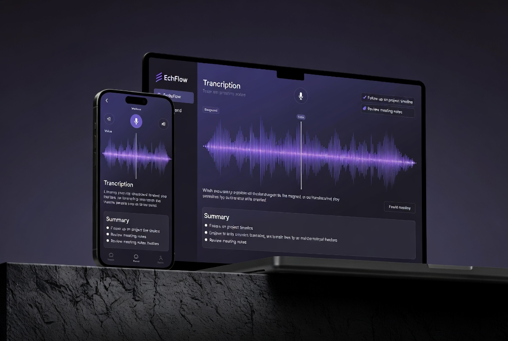

Turn voice notes into organized tasks and insights —instantly
EchoFlow transcribes your voice notes, summarizes them, extract action items, and organizes everything automatically
Get StartedEchoFlow transcribes your voice notes, summarizes them, extract action items, and organizes everything automatically
Get Started
Accurate voice-to-text in seconds with speaker detection
Get clear concise summaries of your long voice notes
Automatically extracts tasks and deadlines
Everything is stored in one searchable workspace
Works on mobile, desktop, and web
EchoFlow turned my messy voice notes into a perfectly organized
task list.
—Sarah K.
The AI summarization is scarily accurate. Game changer.
—Michael D.
Finally a tool that understands context.
—Priya M.
Start by recording a voice note or uploading an existing one.
EchoFlow inistantly converts speech to text, tag speakers, and summarizes the content.
Your dashboard updates instantly with neat summaries and an organized task list.